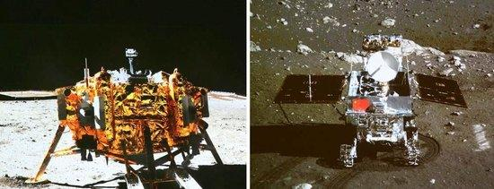

9月23日，习近平总书记在人民大会堂接见探月工程嫦娥六号任务参研参试人员代表，并参观月球样品和探月工程成果展览。
“探索浩瀚宇宙，建设航天强国，是我们不懈追求的航天梦。”习近平总书记发表重要讲话，充分肯定探月工程特别是嫦娥六号任务取得的成就，寄望航天战线的同志们再接再厉、乘势而上，为建设航天强国再立新功。
此前嫦娥三号、嫦娥四号、嫦娥五号任务成功后，习近平总书记都亲切会见了任务参研参试人员代表，向他们表示祝贺和慰问，对中国探月工程提出殷切期望。
飞天揽月是中华民族延续千年的梦想、融入血脉的浪漫追求。习近平总书记曾说：“党中央决策实施探月工程，圆的就是中华民族自强不息的飞天揽月之梦。”
20年来，探月工程聚焦关键核心技术领域持续攻关，在科学发现、技术创新、工程实践、成果转化、国际合作等方面取得丰硕成果，走出一条高质量、高效益的月球探测之路，为我国航天事业发展、为人类探索宇宙空间作出了重大贡献。

新时代以来，习近平总书记高度重视航天事业发展，引领中国探月工程步履坚实、阔步向前。
嫦娥三号任务首次实现我国航天器在地外天体软着陆和巡视勘察。总书记肯定道：“为我国航天事业发展树立了新的里程碑，在人类攀登科技高峰征程中刷新了中国高度。”
嫦娥四号任务在人类历史上首次实现航天器在月球背面软着陆和巡视勘察。总书记点赞：“坚持自主创新、协同创新、开放创新，实现人类航天器首次在月球背面巡视探测，率先在月背刻上了中国足迹”。
嫦娥五号采集1731克月球正面样品返回地球。总书记强调，嫦娥五号任务“标志着中国航天向前迈出的一大步，将为深化人类对月球成因和太阳系演化历史的科学认知作出贡献”。
千百年来，我们望月抒怀，看到的只是月亮的正面。对于人类而言，月球背面是“秘境中的秘境”。
今年5月3日17时27分，海南文昌。长征五号遥八运载火箭托举嫦娥六号探测器向月球飞驰而去。探测器稳稳落月，玄武岩“织就”的五星红旗在月球背面展开，“挖土”后在月球表面留下的“中”字……一幕幕场景让人印象深刻。
6月25日下午，内蒙古四子王旗阿木古朗草原。湛蓝的天幕之下，一顶红白相间的大伞缓缓降落——嫦娥六号返回器携带月背样品到家了。
当天，习近平总书记代表党中央、国务院和中央军委致电祝贺探月工程嫦娥六号任务取得圆满成功。
月背采样在世界上没有先例可循，嫦娥六号是我国航天史上迄今技术水平最高的月球探测任务。总书记高度评价：“嫦娥六号完成了人类历史上首次月球背面采样，突破了多项关键技术，是我国建设航天强国、科技强国取得的又一标志性成果，是我国探月工程的重要里程碑。”
伟大事业孕育伟大精神，伟大精神引领伟大事业。
2020年12月，嫦娥五号任务取得圆满成功，习近平总书记在贺电中提出了“追逐梦想、勇于探索、协同攻坚、合作共赢”的探月精神。
在此次接见嫦娥六号任务参研参试人员代表时，总书记再次强调，要在全社会大力弘扬探月精神，进一步增强全体中华儿女的民族自信心和自豪感，凝聚起以中国式现代化全面推进强国建设、民族复兴伟业的磅礴力量。
探月精神是中国航天人和无数科研工作者自立自强、勇攀科技高峰所铸就的伟大精神，是我国航天事业不断取得新胜利的精神动力。
伟大事业都始于梦想、基于创新、成于实干。
探月工程一路走来，从孙家栋、栾恩杰、欧阳自远等科技大家，到胡浩、李东、张玉花等航天骨干，一代代航天人攻坚克难、勇攀高峰，共同托举探月梦、航天梦。以地球摇篮为起点，中国航天人坚持自力更生、自主创新，推动航天事业从无到有、从弱到强、从“蓝图绘梦”到“奋斗圆梦”，实现历史性、高质量、跨越式发展，航天强国建设迈出坚实步伐。
探索太空永无止境。自立自强、勇毅前行，中国航天事业将不断创造新辉煌，中国人的飞天脚步会迈得更稳更远。